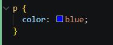
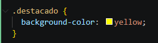
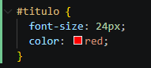

Los selectores en CSS permiten aplicar estilos a elementos espedificos del HTML. Existen distintos tipos según el nivel de precisión que necesitamos.
Selector de Etiqueta: Afectan a todos los elementos de ese tipo.

Selector de clase: Permiten reutilizar estilos en varios momentos.

Selector de ID: Se utilizan para identificar un unico elemento en la pagina.

Es posible combinar selectores para aplicar estilos de forma más específica y controlar mejor el diseño.